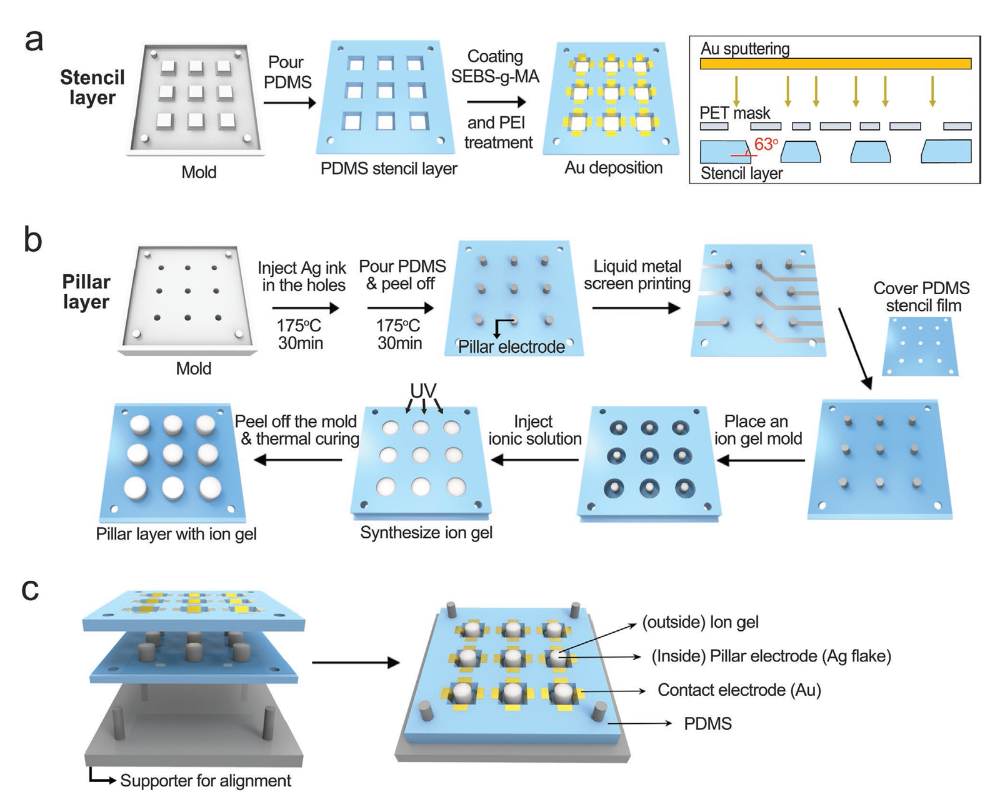
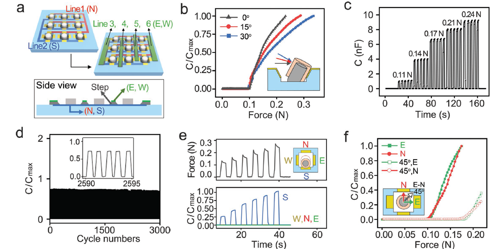
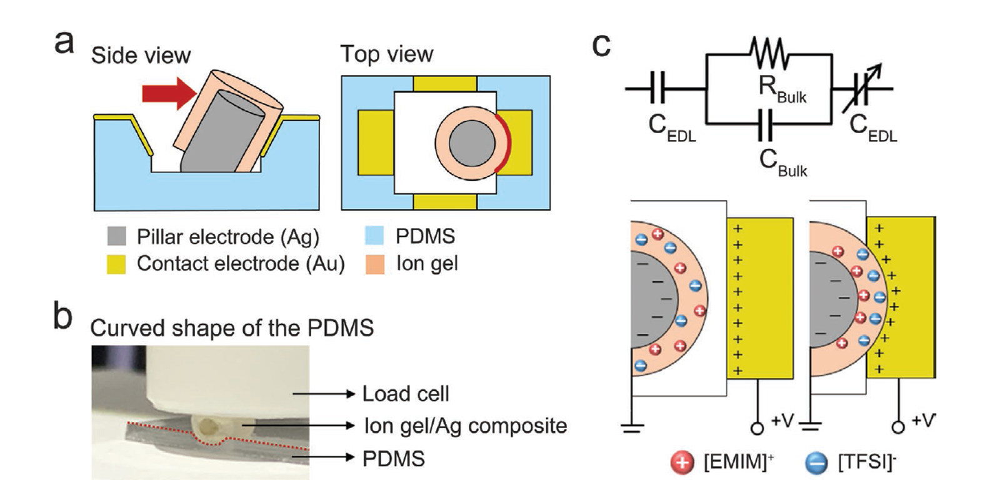
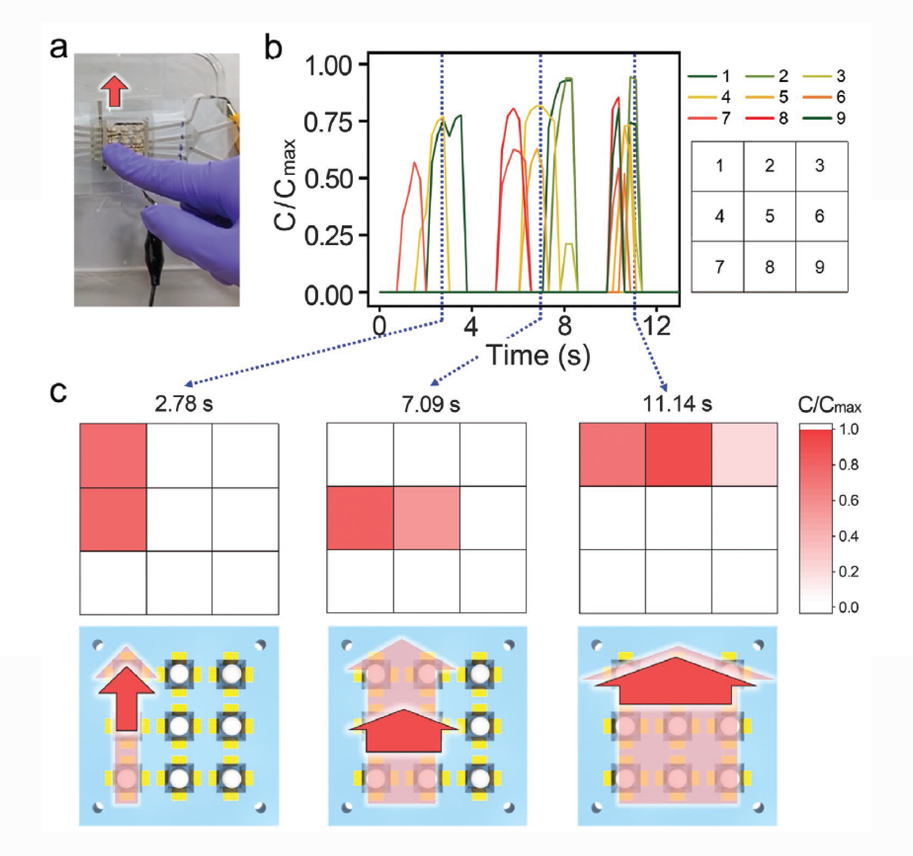

FLEXIBLE SHEAR FORCE SENSOR
Flexible Shear Force Sensor Array
Small-Sized Deformable Shear Sensor Array for Direct Monitoring of Quantitative Shear Distribution
Advanced Materials Technologies, Vol. 7, No. 6, 2101071. 2022
ABSTRACT
An array of shear sensors is essential in tactile sensation as well as the pressure sensors. Surprisingly, however, the shear sensor array is rarely investigated mainly due to the structural complexity to measure the horizontal forces from various directions and also due to the mechanical softness required for preventing the slip of an object. Here, an array of small shear sensors that can recognize both shear force and shear rotational angle is fabricated. All the device components are made of deformable materials to acquire the softness of the sensor. This work presents a novel design for the small-sized shear sensor array and the required material conditions for the design. By using an ion gel as the capacitive sensing material, the shear sensor array shows high sensitivity and excellent reliability under repeated shear forces. This work demonstrates playing computer game with the shear sensor and sensing the frictional force distribution, which is possible through the recognition of multiple shear stimuli and spatial shear distribution (force, rotational angle) when static/dynamic shear forces are simultaneously applied from various directions.
FULL CITATION
Wonjeong Suh, Chaeyong Park, Joosung Oh, Sungmin Moon, Seungmoon Choi, Yeonsoo Kim, and Unyong Jeong. Small-sized Deformable Shear Sensor Array for Direct Monitoring the Quantitative Shear Distribution. Advanced Materials Technologies, Vol. 7, No. 6, 2101071. 2022
FIGURES

Fabrication methods of the shear sensor array composed of a) a stencil layer and b) a pillar layer. a) SEBS-g-MA was coated on the PDMS stencil, reacted with PEI, then Au was sputtered through a mask. b) Ag composite pillars were prepared and coated with a high-modulus ion-gel layer. c) The stencil layer and the pillar layer were combined to make the shear sensor array. The supporter was used for alignment between the two layers.

a) A scheme describing the electrodes and the interconnections. The N- and S-direction interconnections were located on the stencil layer. The E- and W-direction electrodes were constructed above an insulating step to prevent electrical path to the N and S-direction interconnections. b–f) Performances of the unit shear sensor. b) Relative capacitance (C/Cmax) changes according to the external shear force in one direction. The dependency on the shear force angle (θ = 0°, 15°, 30°) from the surface plane was analyzed. c) Repeated responses of the sensor in each force 0.11, 0.14, 0.17, 0.21, and 0.24 N (θ = 0). d) Relative capacitance during 3000 cycle tests with a shear force of 0.17 N. e) The response of every four electrodes under shear forces from different directions. The four directions are marked in E (east), W (west), S (south), and N (north). The capacitance changes of the S, W, N, E directions were plotted while the pillar was forced to S direction. f) Relative capacitance changes according to the rotational angles (ρ = 0°, 45°. 90°) of the shear force.

a,b) Sensing mechanism of the shear sensor. The pillar is bent at its bottom part under external shear force. The high modulus of the ion gel and the conductive pillar made the Au-coated PDMS indented upon compression. c) Equivalent circuit and schematic description of the EDL constructed at the interface between the electrode and the ion gel.

The real-time C/Cmax profiles of the sensor arrays and captured shear distribution profiles under dynamic shear forces. a) Digital image of the dynamic motion on the 3 × 3 shear sensor. b) The real-time C/Cmax profiles of the sensor while shear force was applied with a finger in the N-direction. The numbers (1–9) indicate the positions of the pixels. c) Shear distribution profiles and the scheme illustrating the corresponding finger motions. The light red arrows in the scheme indicate the overall movement of each section and the dark red arrows present the movement corresponding to the snapshot shear distributions at the measurement time; (left) 2.78 s, (middle) 7.09 s, (right) 11.14 s.